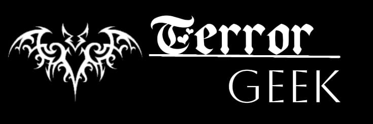
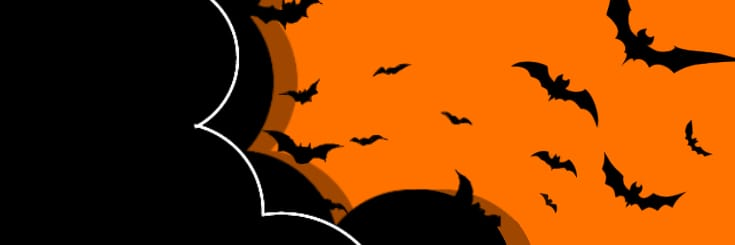

|   |
|---|
Hitoshi Iwaaki é a mente por trás do mangá de terror Parasyte, também conhecido como Kiseijū. Mais de 30 anos após sua publicação, a obra mantém sua longevidade e destaque entre os seinens de terror e se prepara para receber uma série na Netflix, que estreia em 6 de abril. Kiseijū vendeu mais de 30 milhões de cópias em mais de 30 regiões diferentes. Como uma das obras de destaque no currículo de Iwaaki, o mangaká sente profundo apego a este trabalho como revelou durante as divulgações da série Parasyte: The Grey.
"O mangá Parasyte é como um filho para mim, nascido do meu próprio trabalho em uma pequena sala, enquanto a animação e o filme live-action [do Japão] eram como ‘netos’, nascidos deste meu filho que saiu pelo mundo e conhecendo muitas pessoas e sua sabedoria, experiência e tecnologia. Estou muito feliz porque outro ‘neto’ está nascendo na Coreia.”